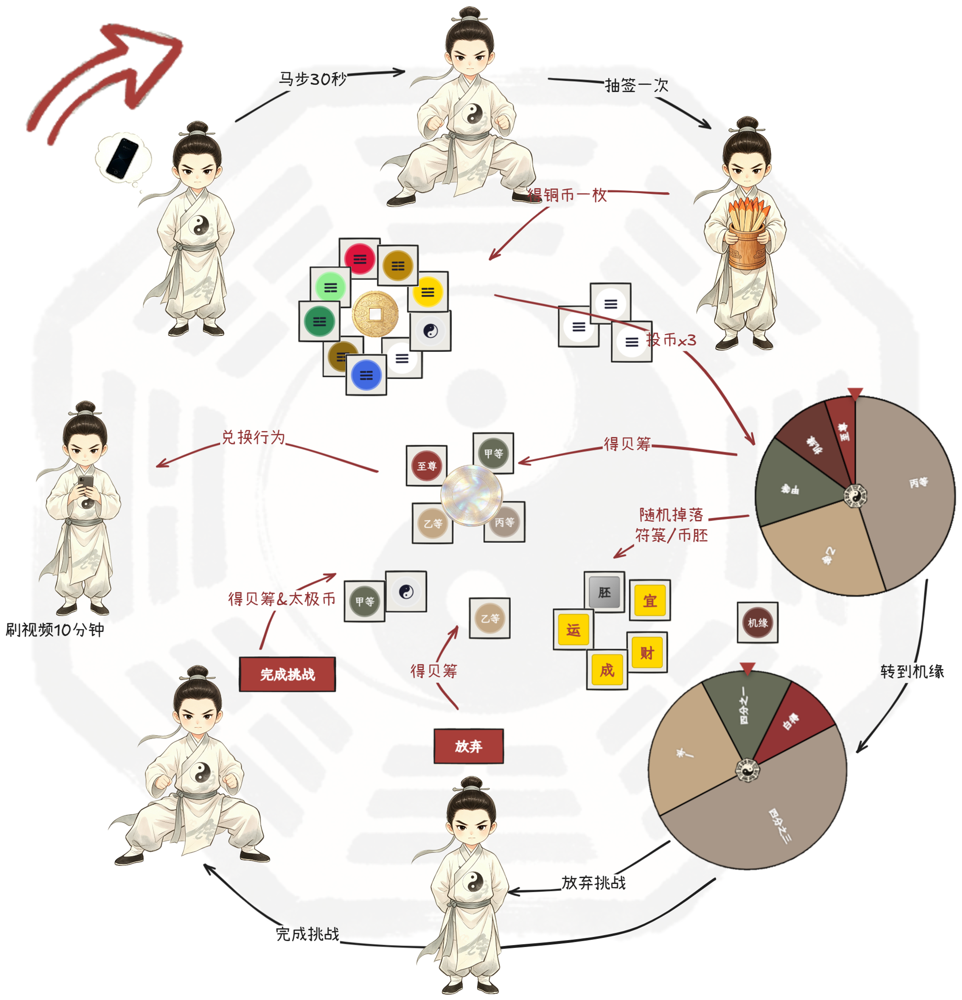

0
累计投币：0
暂无铜币记录
点击符箓可使用；悬浮可查看说明
每 8 个币胚可随机合成一枚八卦硬币
当前币胚：0
当前贝筹：0
暂无商品，请在设置中添加
暂无历史商品
商品：—
消耗贝筹：0
基于本地埋点统计的产品指标（北极星：周均抽签次数）

这是一款把「哄自己做事」变成抽签游戏的工具。核心循环：
点击签筒抽签 → 获得八卦铜币 → 投币转盘 → 赢得贝筹 → 在商城兑换你为自己设定的奖励。
同时还有里程碑奖励、机缘挑战、符箓道具、成就收集等玩法，利用上瘾模型拉着你持续行动。
主界面正中是签筒。左键点击抽一次；右键点击（手机端长按）会弹出菜单可选「抽一次」或「抽十次」。
每次抽签随机得到一枚铜币，并对应一卦（共 64 卦）。抽到的卦象会自动收录到「收集册」。
铜币分两类：
· 八卦铜币：乾 ☰、兑 ☱、离 ☲、震 ☳、巽 ☴、坎 ☵、艮 ☶、坤 ☷（按抽签数字归属）。
· 太极币 ☯：稀有，抽到本宫卦时获得，可在转盘时充当任意八卦币补缺。
每种铜币持有上限 10000 枚；满了之后再抽不会再增加，但仍会记录卦象。
点击主界面「转盘」按钮打开奖励转盘：
· 转一次：消耗 3 枚同属性铜币（太极币可补缺），旋转 1 次。
· 转十次：消耗 30 枚同属性铜币 + 太极币，连续旋转 10 次。
系统会自动优先消耗数量最多的八卦币，不足部分用太极币补齐。铜币不够时按钮会变灰，鼠标悬停可看到原因。
转盘结果与概率：
· 丙等 = 1 贝筹（45%）
· 乙等 = 3 贝筹（25%）
· 甲等 = 5 贝筹（15%）
· 至尊 = 10 贝筹（5%）
· 机缘 = 进入机缘转盘（10%，先得 1 贝筹）
每次转盘还有概率额外掉落符箓或币胚（见后文「转盘掉落」）。
奖励转盘抽中「机缘」时，会进入机缘转盘。机缘转盘的四种结果：
· 四分之三 / 一半 / 四分之一：从你的任务中随机抽一个，按对应比例给出挑战数量，完成后才能领奖。
· 白得：无需挑战，直接获得甲等奖励 + 太极币。
挑战结算：
· 完成挑战：获得甲等（5 贝筹）+ 1 枚太极币。
· 放弃挑战：仅获得乙等（3 贝筹）。
挑战数量 = 任务基础个数 × 百分比（四舍五入）。比如任务「马步 30s」抽到一半，挑战数就是 15s。
转十次累计抽中的机缘会合并成一次大挑战，按机缘次数发放奖励；若全是「白得」则直接结算无需挑战。
主界面上方的进度条显示你的累计投币数。每达到一个设定的里程碑，进度条上对应的宝箱就会亮起。
点击亮起的宝箱即可领取奖励。奖励内容在「设置 → 里程碑奖励」中自定义。
点击主界面「商城」按钮，用贝筹兑换你为自己设定的商品。
商品分两种兑换方式：
· 只能换一次：兑换后从商品列表移除，归档到「历史商品」页。
· 能换无限次：可重复兑换。
商品名称、所需贝筹、兑换次数都可以在「设置 → 商城商品」中添加和编辑。
点击主界面顶部「铜币」按钮打开荷包，荷包分三个页签：
· 硬币：查看九种铜币的持有数量（按数量从多到少排序），下方是铜币流水，可翻页、可一键复制。
· 符箓：查看持有的四种符箓，点击可使用，鼠标悬停可看说明。
· 币胚：查看币胚数量，每集齐 8 个币胚可合成 1 枚随机八卦铜币。
· 宜·诸事皆宜：激活后，下一次抽签奖励翻倍（再发一枚同种铜币），不可叠加，抽签后自动消耗。
· 运·时来运转：把数量最少的一种八卦币全部转化为数量最多的一种。背包里至少要有两种八卦币才能用。
· 成·心想事成：无需执行任务，直接抽签一次。
· 财·招财进宝：立即获得 3 个币胚。
符箓可通过转盘掉落、新手任务、每日签到、成就奖励、收集册宝箱等途径获得。
每次转盘（含十连转的每一次）都会独立判定是否掉落符箓或币胚，两者各算各的、可同时掉落。
每日前 20 次转盘维持基础掉落概率（约 33%）；超过 20 次后概率会逐次衰减，最低不会低于 5%。
每日 0 点重置次数。这条规则是为了鼓励「细水长流」而非一次性猛转。
点击主界面「成就」按钮查看。成就分两类：
· 普通成就：达成条件自动解锁，包含隐藏成就（满足特殊条件才会触发，未解锁前显示为 ???）。
· 阶梯成就：分一、二、三阶，按累计数量（10/50/100 或 100/500/1000）依次解锁。
每解锁一个成就都会随机发放一份奖励：币胚×3 或 随机符箓×1，记得在成就列表里点击「领奖」收取。
有未领取奖励时，「成就」按钮右上角会显示红点提示。
收集册记录你抽到的 64 卦，在「成就」弹窗内切换到「收集册」页签即可查看。
· 每收集 16 / 32 / 48 / 64 卦，会分别解锁一个宝箱，宝箱奖励对应四种符箓之一。
· 新解锁的卦象右上角会有红点，点击可领取 1 个币胚。
· 点击已收集的卦象，可查看该卦的卦辞、大象传等周易原文。
点击主界面「任务」按钮打开。任务分两类：
【每日签到】每日 0 点重置。
【新手任务】 起卦、定数等多条任务线，按顺序逐个解锁，完成后会获得符箓、币胚、积分或八卦硬币奖励：
同一条线内必须按顺序完成并领奖，前一个领奖后才会解锁下一个。整条线完成后该线标签页会自动隐藏。
有可领取的任务时，主界面「任务」按钮和对应标签页都会显示红点。
· 导出数据：把当前所有进度（铜币、贝筹、任务、设置、成就等）保存为一个 JSON 文件，文件名带时间戳。
· 导入数据：选择之前导出的 JSON 文件，恢复全部进度。建议换设备或清理浏览器前先导出。
· 清零：把所有数据重置为空白状态（任务/里程碑/商城的默认配置也会被清空），此操作不可撤销，请谨慎。
· 备份提醒：超过 30 天未导出数据时，主界面顶部会出现一条「建议导出备份」的提示，可关闭。
· 按 Esc 键可关闭当前最上层的弹窗；点击弹窗外的灰色背景也可关闭。
· 转盘旋转期间无法关闭弹窗，请等待结算完成。
· 手机端长按签筒 0.5 秒可弹出「抽一次 / 抽十次」菜单。
· 顶部「铜币」「贝筹」按钮分别打开荷包与贝筹流水，可随时查阅明细。
· 进度条、商城、成就等各处的红点都是「有可领取内容」的提示，记得多点一点。
· 数据都保存在本地浏览器中，清除浏览器数据会丢失进度，请定期导出备份。
部分机制灵感来自 I built a habit system as addicting as a casino ，SpoonFedStudy 的主页有很多很棒的生产力视频，强力推荐。
建议初步设置不超过 5 个里程碑，在里程碑达成后再逐步添加。
单条任务数量建议大于等于 4，这样在抽机缘时可以减量。
比如跑步 1km（写作 1000m），机缘界面如果抽到「一半」会自动换算为 500m。
建议里程碑放大一点的，商城放小一点的立刻可以得到的。
大一点的可以是有点舍不得买的物品比如新电脑、不舍得去的地方比如三亚。小一点的可以是立刻就能得到的东西，比如推拿或者芝士蛋糕
商城一定要有一个纯上瘾的东西：如果对某个游戏上瘾就放个游戏局数，如果对刷短视频上瘾就放短视频时长，还有开盲盒或者收集周边。
这个纯上瘾的东西还有 3 个属性：
1、单是想到这个事情你就觉得蠢蠢欲动。
2、你不可以在非兑换的情况下得到它或体验它，比如选了游戏，没兑换就不可以玩。
3、在这个事情上投入大量时间和钱是让你后悔的。
累计投入 0 枚
获得奖励：—
所有数据将被重置，包括贝筹、铜币、累计投入等
此操作不可撤销！
当前贝筹：0
暂无贝筹记录
每日 0 点重置完成状态
抵制不良游戏，拒绝盗版游戏。
注意自我保护，谨防受骗上当。
适度游戏益脑，沉迷游戏伤身。
合理安排时间，享受健康生活。